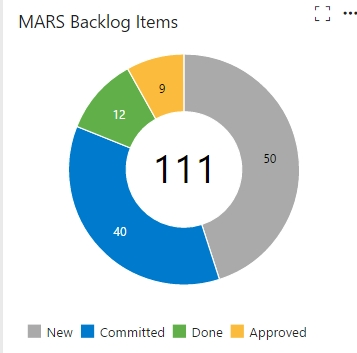

The MARS Project
Making administrating Research Simpler

How was the project able to gain so much momentum in such a small space of time?
1. Continuous Integration
- When a commit is made to a particular branch a project "build" is started. This branch could be just the general dev branch or it could be a dedicated release branch
- The source code is delivered to a "build machine" to be built and unit tested from scratch

2. Continuous Deployment
- When a commit is made and the resulting build process is successful then the Test Environment owner is asked whether it is OK to update the environment with the new change.
- As long as there is no critical reason why a feature cannot go into the Test environment then an automatic deploy is started
3. Using The Dependency Injection Design Pattern Using Constructor-based Injection
- This means that the coupling between classes is explicitly made during the web project startup routine
- This helps us to "prefer composition over inheritance" when we share dependent code. It also helps us to keep to the principal of least knowledge

Other beneficial side effects?
- It is easier to unit test our business logic
- Avoiding the new keyword reduces the temptation to do too much in the constructor
Problems with the DI pattern
- Busy constructors in classes and controllers which grow
- Tooo many classes!
4. The Mediator Pattern and Command Query Separation
4. The Mediator Pattern and Command Query Separation continued...
4. The Mediator Pattern and Command Query Separation continued...
- So MediatR uses generics to request a particular Query or Command class
- We can chain the Querys and Commands which shows a clear order for our events
- This encourages a reduction in coupling to such an extent that we can increase Code reuse
5. Maintain Good Code Conventions - General Points
- Classes are capitalised, function parameters are lowercase, just always
- Boy scouting and the "don't be part of the problem" attitude
- DRY - Try not mindlessly copy and paste code
- Make the Code, particularly in Controllers, read and flow well...
- Avoid Pointless abbreviations...
And Finally Some Profound Coderisms
Joanna's favourite: "Always code as if the guy who ends up maintaining your code will be a violent psychopath who knows where you live" Rick Osbourne
"Any fool can write code that a computer can understand. Good programmers write code that humans can understand" Martin Fowler
"Good code is its own best documentation. As you're about to add a comment, ask yourself, 'How can I improve the code so that this comment isn't needed?' Improve the code and then document it to make it even clearer"" Steve McConnell
"The best method for accelerating a computer is the one that boosts it by 9.8 m/s squared." Anon